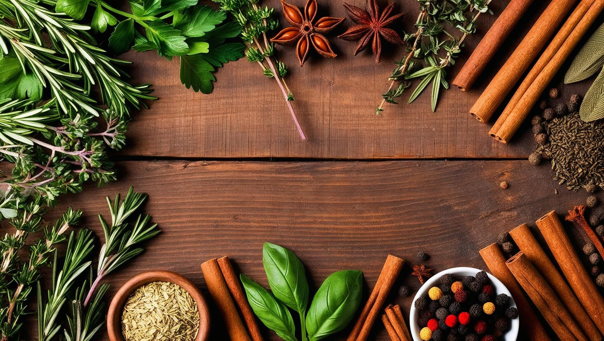

Welcome to Herbal Recipes & Spices Education
Discover natural remedies, spice blends, and herbal teas for various ailments and culinary delights. Learn, prepare, and enjoy the benefits of nature!
- Explore step-by-step guides for making herbal remedies at home.
- Understand the health benefits and uses of common kitchen spices.
- Find tips on sourcing, storing, and preserving fresh herbs and spices.
- Access expert advice on safe herbal practices and dosages.
- Join our community to share recipes, ask questions, and connect with herbal enthusiasts.
Herbs & Spices for Health
Herbs and spices are not only essential for flavoring food but also offer numerous health benefits. Here are some common herbs and spices along with their uses:
- Ginger: Anti-inflammatory, aids digestion, and relieves nausea.
- Peppermint: Soothes digestive issues, relieves headaches, and freshens breath.
- Turmeric: Powerful anti-inflammatory and antioxidant properties.
- Cardamom: Aids digestion, freshens breath, and has antioxidant properties.
- Cloves: Antimicrobial properties, helps with toothache relief.
- Star Anise: Antiviral properties, used in cough syrups.
- Chili Pepper: Boosts metabolism and adds heat to dishes.
- Ashwagandha: Adaptogen that helps manage stress and anxiety.
- Maca Root: Enhances energy levels and supports hormonal balance.
- Mullein: Supports respiratory health and soothes the throat.
- Goat Weed (Epimedium): Traditionally used to boost energy and libido.
- Mugwort: Aids digestion and promotes relaxation.
- Black Pepper: Enhances nutrient absorption from other herbs and foods.
Herbal Recipes for Common Ailments

- Ginger Tea for Cold: Boil sliced ginger in water, add honey and lemon. Drink warm.
- Peppermint for Indigestion: Steep peppermint leaves in hot water for 5 minutes. Sip slowly.
- Turmeric Milk for Inflammation: Mix turmeric powder in warm milk, add a pinch of black pepper.
- Cardamom for Fresh Breath: Chew cardamom pods or add to tea for a refreshing flavor and digestive support.
- Cloves for Toothache: Place a whole clove on the affected tooth or use clove oil for temporary relief.
- Star Anise for Cough: Simmer star anise in hot water and sip as a soothing herbal tea.
- Chili Pepper for Metabolism: Add fresh or dried chili pepper to dishes to boost metabolism and circulation.
- Ashwagandha for Stress: Mix ashwagandha powder into warm milk or smoothies to help manage stress and support energy.
- Maca Root for Vitality: Blend maca root powder into smoothies or oatmeal for increased stamina and hormonal balance.
- Mullein for Respiratory Health: Steep mullein leaves in hot water to make a tea that soothes the throat and supports lung function.
- Goat Weed (Epimedium) for Energy: Use goat weed supplements or teas to support energy and vitality (consult a healthcare provider first).
- Mugwort for Digestion: Brew mugwort leaves as a tea to aid digestion and promote relaxation.
- Black Pepper for Absorption: Add freshly ground black pepper to meals to enhance the absorption of nutrients and other herbs.
These herbs and spices not only add flavor to your meals but also offer a range of health benefits. Always use them in moderation and consult a healthcare professional if you have underlying health conditions or are pregnant.
Download Our eBook
Get our comprehensive eBook on herbal remedies and spice education. It includes detailed recipes, health benefits, and tips for using herbs and spices effectively.
Download eBookPowerful Herbal Recipes for Various Ailments
| Ailment | Recipe | Preparation |
|---|---|---|
| Cold & Flu | Ginger-Garlic Honey Tea | Boil sliced ginger and crushed garlic in water, strain, add honey and lemon. Drink warm twice daily. |
| Indigestion | Peppermint-Fennel Infusion | Steep peppermint leaves and fennel seeds in hot water for 7 minutes. Drink after meals. |
| Inflammation | Turmeric-Golden Milk | Mix turmeric, black pepper, and a dash of cinnamon in warm milk. Sweeten with honey if desired. |
| Stress & Anxiety | Ashwagandha-Lemon Balm Tea | Steep ashwagandha root and lemon balm leaves in hot water for 10 minutes. Drink before bed. |
| Cough | Thyme-Honey Syrup | Simmer thyme in water, strain, mix with honey. Take 1 spoonful as needed. |
| Low Immunity | Elderberry-Echinacea Elixir | Simmer elderberries and echinacea root in water, strain, add honey. Take daily during cold season. |
| Headache | Willow Bark-Peppermint Tea | Steep willow bark and peppermint leaves in hot water for 10 minutes. Drink as needed. |
Always consult a healthcare professional before starting any herbal remedy, especially if you have underlying health conditions or are pregnant.
Strong Spice Mixes for Different Dishes

| Dish Type | Spice Mix | Ingredients | Usage |
|---|---|---|---|
| Grilled Chicken | Smoky BBQ Rub | Paprika, garlic powder, onion powder, black pepper, cayenne, brown sugar, salt | Rub generously on chicken before grilling or roasting. |
| Vegetable Curry | Classic Curry Blend | Coriander, cumin, turmeric, fenugreek, mustard seeds, chili powder, cinnamon | Add 2-3 tsp to sautéed onions and tomatoes as curry base. |
| Beef Stew | Hearty Stew Mix | Bay leaf, thyme, rosemary, black pepper, smoked paprika, allspice | Stir into broth or sprinkle over meat before browning. |
| Fish & Seafood | Zesty Citrus Mix | Lemon zest, dill, parsley, garlic powder, black pepper, sea salt | Sprinkle on fish before baking or grilling. |
| Rice & Grains | Aromatic Pilaf Blend | Cumin, cardamom, cinnamon, cloves, bay leaf, saffron | Add to rice or grain cooking water for fragrance and flavor. |
| Roasted Vegetables | Herb & Spice Medley | Oregano, thyme, smoked paprika, garlic powder, black pepper, sea salt | Toss with olive oil and vegetables before roasting. |
Mix spices in advance and store in airtight containers for convenience. Adjust quantities to taste and dietary needs.
Strong Herbal & Spice Mix for Health Teas

| Tea Blend | Ingredients | Preparation |
|---|---|---|
| Immunity Boosting Tea Mix | Dried ginger, turmeric, cinnamon stick, black pepper, lemongrass, cloves, star anise | Simmer equal parts of all ingredients in water for 10 minutes, strain, and sweeten with honey if desired. |
| Detox & Digestion Tea Blend | Dried dandelion root, fennel seeds, peppermint leaves, lemon slice | Steep all ingredients in hot water for 7 minutes. Drink after meals for digestive support. |
| Anti-Inflammatory Power Tea | Turmeric, ginger, cardamom, cayenne pepper, lemon | Blend all ingredients, steep in hot water, add a squeeze of lemon, and enjoy warm. |
| Relaxation & Sleep Tea | Chamomile, lavender, lemon balm, valerian root | Combine all herbs, steep for 5–7 minutes before bedtime. |
Mix these herbs and spices in advance and store in airtight containers. Use 1–2 teaspoons per cup of hot water. Always consult a healthcare professional before starting new herbal blends, especially if you have health conditions or take medications.
Recommended eBooks for Further Learning
- Herbal Remedies Guide
- Spice Blends for Every Dish
- Herbal Teas & Their Benefits
- Herbal Oils: Extraction & Uses
- Herbal Tinctures: Preparation & Application
- Advanced Herbalism Techniques
Explore our collection of eBooks to deepen your understanding of herbalism and spice preparation. Each eBook is designed to provide you with practical knowledge and skills.
Whether you're a beginner or an experienced herbalist, our eBooks cover a wide range of topics, from basic herbal remedies to advanced techniques in herbalism.
Expand your knowledge with our expertly curated eBooks. Add to Cart